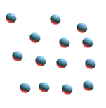

O Que é a Fusão Nuclear?
A fusão nuclear é quando dois ou mais átomos se fundem, gerando assim um novo elemento de massa menor ao que lhe originou. Achou complexo? Bom, permita-me explicar.
A fusão acontece em tres estágios:
A Fusão:
Dois atomos fundem seu nucleo, formando um novo elemento.
O Novo Atomo:
A junção de dois átomos tem como resultado um novo átomo, o "Elemento Pesado". Este tal elemento tem a massa menor do que a dos átomos que lhe deu origem. 
A junção de dois átomos tem como resultado um novo átomo, o "Elemento Pesado". Este tal elemento tem a massa menor do que a dos átomos que lhe deu origem.
Energia:
A massa restante que não foi usada na formação desse novo elemento se transformou em energia. Muita energia!
A massa restante que não foi usada na formação desse novo elemento se transformou em energia. Muita energia!

Curiosidade: A fusão de um quilograma de Hidrogênio poderia gerar trinta milhões de vezes mais energia do que a queima de um quilograma de carvão.